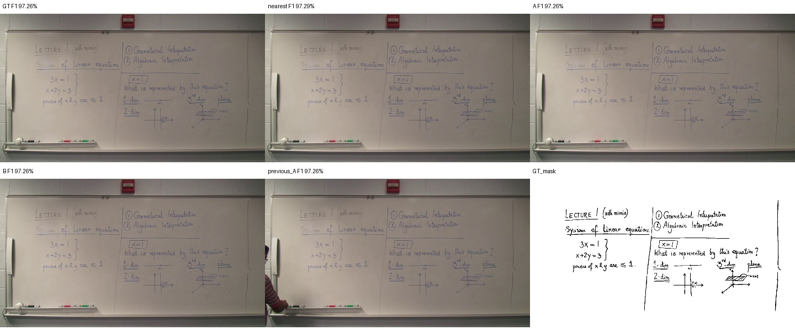
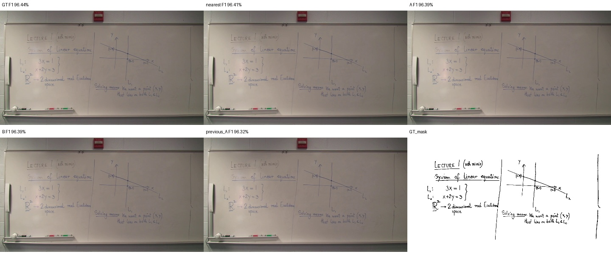
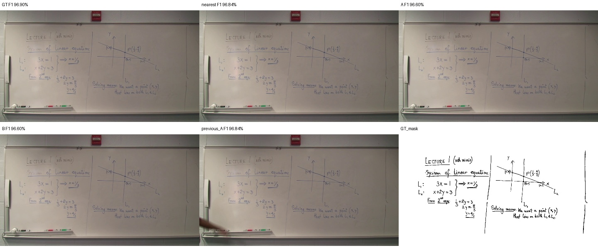

GT는 평가에만 사용. 기존 점수 계산 함수를 유지했습니다. 강의 전체 판서 요약의 공식 unique-CC 지표는 아닙니다.
| Output | Recall | Precision | F1 |
|---|---|---|---|
| GT | 99.56% | 94.32% | 96.87% |
| nearest | 99.53% | 94.30% | 96.84% |
| A | 99.53% | 94.12% | 96.75% |
| B | 99.53% | 94.12% | 96.75% |
| previous_A | 99.51% | 94.25% | 96.80% |


